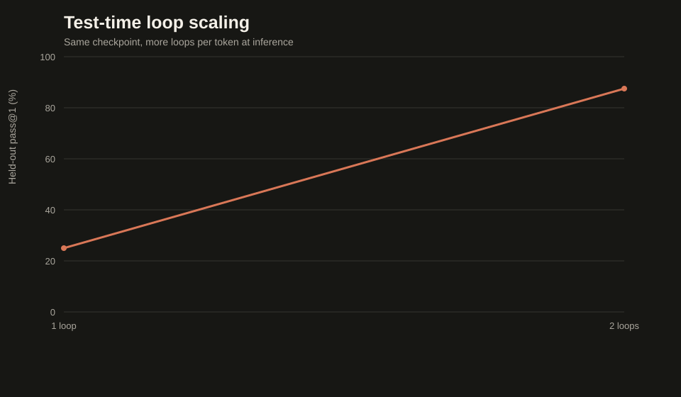
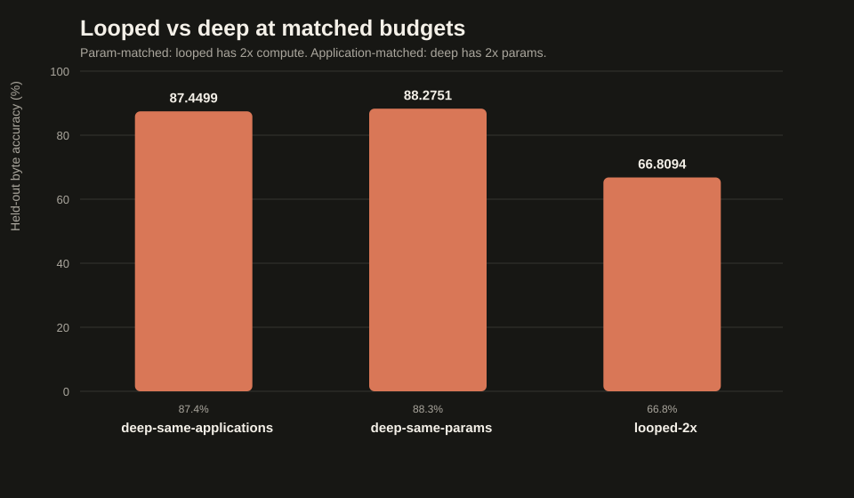

course
Looped Transformers
Recurrent Depth, From Scratch
The architecture trick reported behind GPT-6 Astra: run the same blocks twice. Extra thinking per token, zero extra weights — built, trained, and measured at teaching scale.
The idea in one picture
conventional: B1 → B2 → ... → B6 6 apps, 6 weight sets
looped: [B1 → ... → B6] → [B1 → ... → B6] 12 apps, still 6 sets
first block → LOOP → last block (MoR sandwich)
each pass re-injects the anchor (latent reasoning)
Who does this?
| Model | Shared blocks | Passes | Applications |
|---|
| Nanbeige4.2-3B | 22 | 2 | 44 |
| Ouro-2.6B-Thinking | 48 | 4 + exit gate | 192 |
| Latent reasoning (Geiping) | 4 (sandwiched) | up to 64 | variable |
| Mixture-of-Recursions | recursion block | per token (router) | adaptive |
| GPT-6 Astra (rumored) | "recurrent depth" | ? |
Looping is depth, not time
- RNNs reuse weights across time steps — one token at a time, hidden state carried forward.
- Looped transformers reuse weights across depth — every token's representation passes the stack repeatedly; attention still sees the whole context on every pass.
- Same trick as "make the model deeper", minus the parameter bill.
This implementation
bytes → embedding → first block (Layer 0)
anchor = its output
LOOP ×2: state = proj([anchor ; state])
state = shared stack ×6 (same weights)
policy picks each position's pass:
fixed · exit gate · router
last block → RMSNorm → tied head
16 block applications, 8 distinct blocks, ~14.6M parameters.
Three ways to choose the depth
- fixed — Nanbeige: every position takes the final pass.
- exit gate — Ouro / Universal Transformer: cumulative exit probability crosses a threshold → halt and read that pass (train soft, infer hard).
- router — MoR token-choice: one routing decision per position, up front.
The KV cache does not shrink
- Pass 2 sees different inputs than pass 1 → block 1's keys differ per pass.
- Separate caches per (pass, block) — a 2-loop model caches like 2N blocks.
- Nanbeige tried sharing: half the memory, worse quality. We implement separate.
- Proven in tests: cached decoding ≡ full recomputation, exactly.
Train it with random loop counts
run_cpu.bat scripts\train_pretrain.py --output runs\pretrain-001 ^
--steps 150 --batch-size 16 --randomize-loops --seed 42
Latent-reasoning style: the model learns to work at any loop budget, so you can spend more compute per token at inference.
Test-time loop scaling

Same checkpoint, more loops per token — the inference-time compute dial.
Looped vs deep, both directions

- param-matched: same blocks, looped runs them twice.
- application-matched: same compute, deep owns twice the blocks.
What the research says
- Reasoning improves with looping; knowledge storage does not (Virtual Logic Depth).
- Matched compute favors looping at scale — SMELT: 6.8–18% training-compute savings; tiny models prefer vanilla (MoR Fig 11).
- Latent feedback can shorten reasoning traces in base models (Full-bandwidth).
Does looping hide chains of thought?
No — looping adds computation inside the forward pass; chains of thought are tokens. Fewer tokens at fixed accuracy is a capability effect, and the trace never fully described the computation anyway. (Raschka, §5.)
Auditable by construction
- Versioned JSON receipts with SHA-256 weight hashes for every run.
- Deterministic seeds from pure integer hashes; fail-closed checkpoints.
- 30 tests: weight sharing, causality, cache equivalence, policies, verifier.
run_cpu.bat experiments\looped_vs_deep.py --output artifacts\experiments\looped-vs-deep
Limitations, stated plainly
- ~14.6M parameters, 192-byte context, synthetic programs.
- Tiny scale often prefers vanilla depth — we report whatever lands.
- No compute savings from policies (all passes run); KV sharing is future work.
Build it, measure it, report it.